Through nearly three years overseas, Allen and Catherine — not yet married, still Catherine Kline of Cressona — kept in touch by mail and, when a letter was too slow, by cable. This telegram, sent via RCA from his Army Post Office overseas, is one that survives.
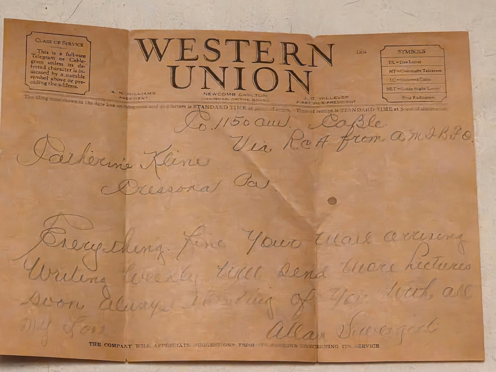
Western Union cablegram, Allan Sweigert to Catherine Kline, Cressona, Pa., sent via RCA from his overseas Army Post Office.
“Everything fine. Your mail arriving. Writing weekly. Will send more pictures soon. Always thinking of you, with all my love.”
Allan Sweigert, Telegram To Catherine
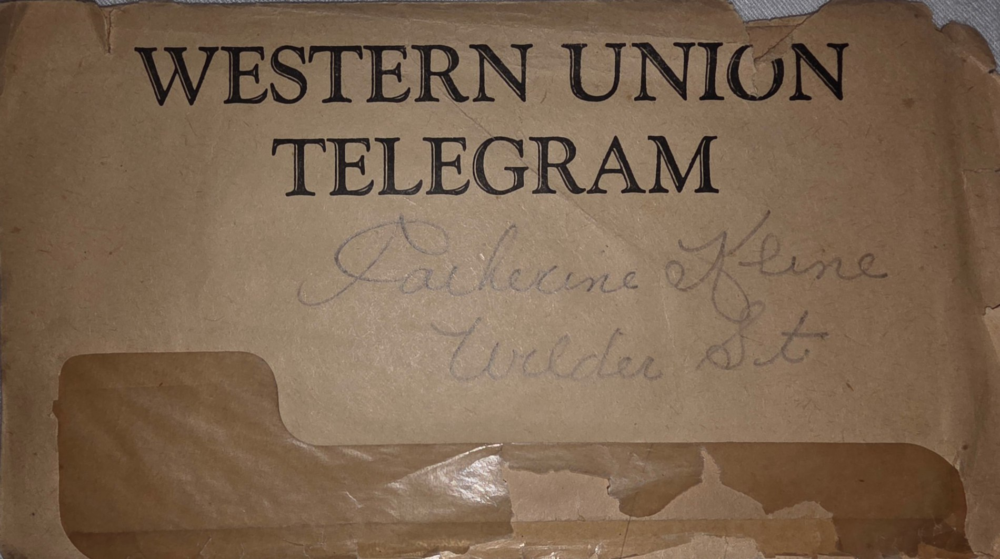
The telegram's delivery envelope, addressed to Catherine Kline, Cressona, Pa.
They married October 14, 1944, a week after Allen came home — Rev. Mark G. Wagner officiating, by license from the Clerk of the Orphans' Court of Schuylkill County.
Allen and Catherine, their wedding portrait — his master sergeant's chevrons still on his sleeve, her veil and corsage just visible.
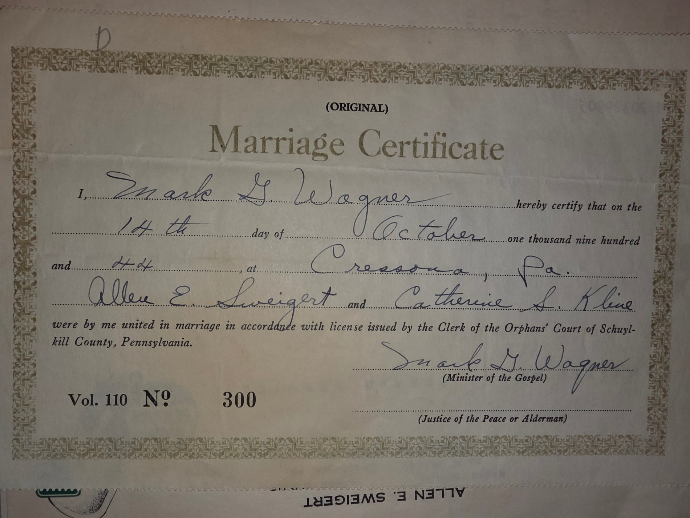
Allen E. Sweigert and Catherine S. Kline's original marriage certificate, October 14, 1944, Cressona, Pa.
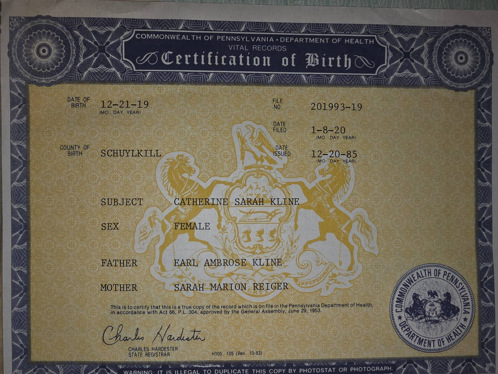
Catherine's own certification of birth: Catherine Sarah Kline, born December 21, 1919, Schuylkill County, to Earl Ambrose Kline and Sarah Marion Reiger.Allen and Catherine, decades later, at one of Catherine's birthdays — still together.
Before and After
Radio operator training became a trade: after the war, Allen opened his own shop on Chestnut Street in Cressona, selling and repairing radios and electrical appliances, then completed Coyne Electrical School in Chicago (department grades of 91.3 in General Electricity and 94.5 in Radio-Electronics) before spending the rest of his career as an Alcoa electrician, certified in 1951 after a 3½-year apprenticeship.
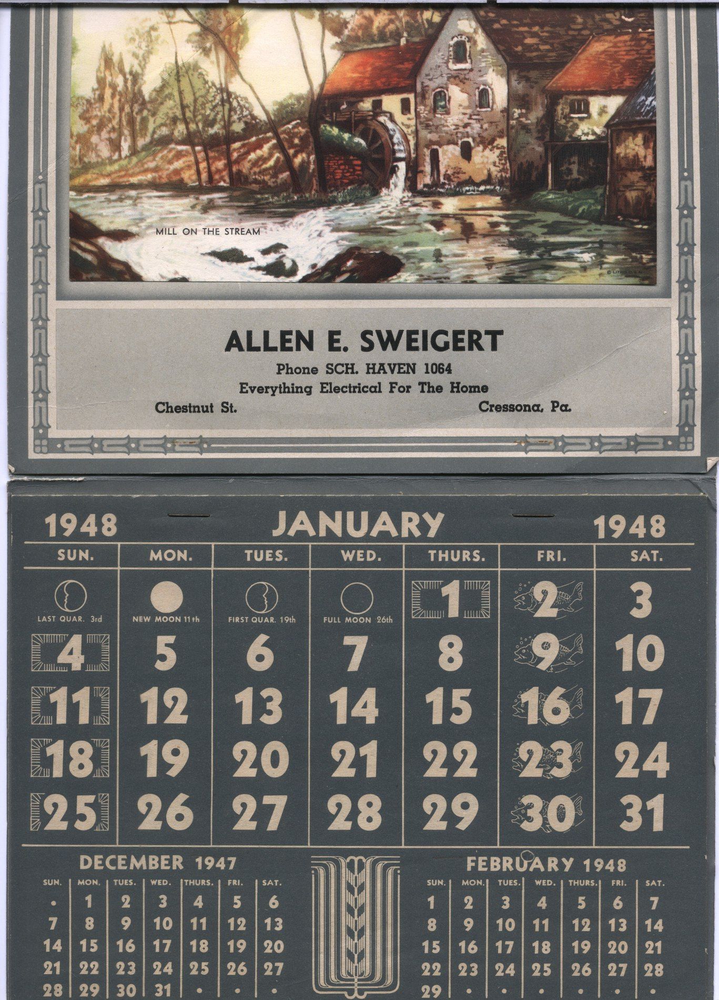
A 1948 advertising calendar for Allen's shop.A second 1948 calendar: “Allen E. Sweigert, Radios - Electrical Appliances, Chestnut Street, Cressona, Pa.”Allen and his father, Earl J. Sweigert, on a Chicago street, 1945 — while Allen attended Coyne Electrical School.His official Coyne Electrical School transcript, Chicago — graduated January 1946; instructor's remark: “In all work assigned to him he displayed very good industry, cooperation and mechanical ability.”His Alcoa electrician's certificate, Cressona Works, April 30, 1951.
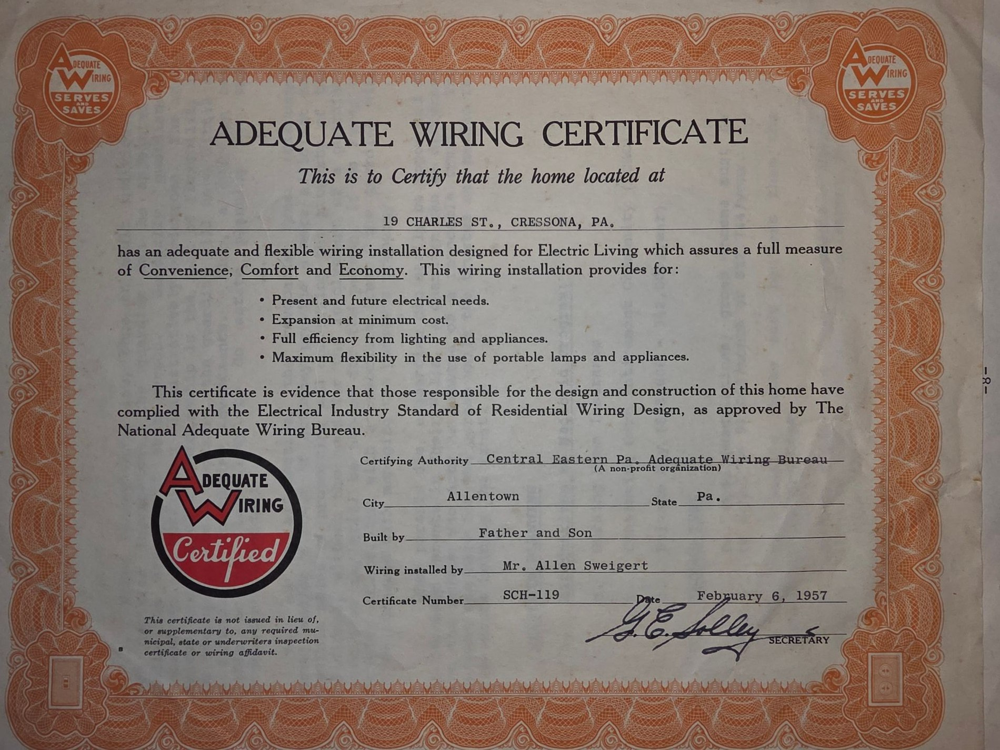
An Adequate Wiring Certificate for the Sweigert home on Charles Street, Cressona, 1957 — built by “Father and Son,” wiring installed by Mr. Allen Sweigert himself.The 1943 dedication of the Roll of Honor, Cressona, Pennsylvania, honoring residents serving in the armed forces.
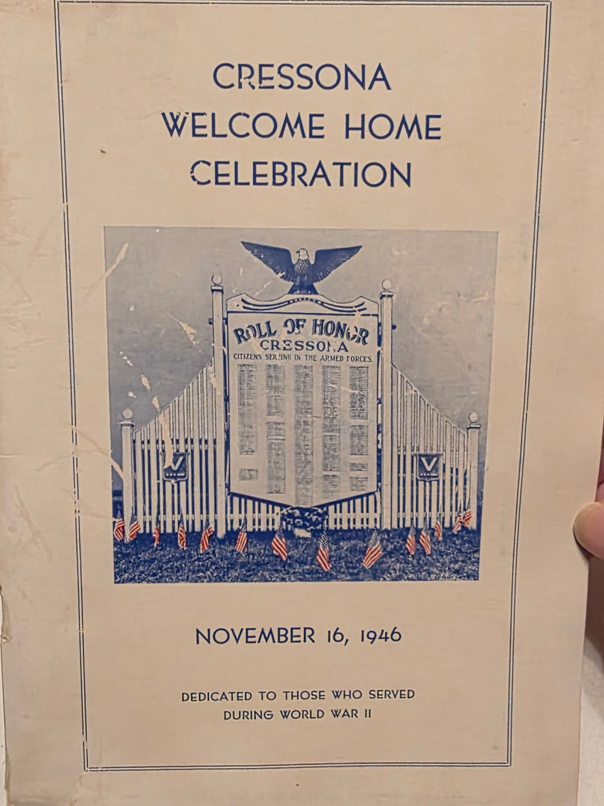
Program for the Cressona Welcome Home Celebration, November 16, 1946, “dedicated to those who served during World War II.”“A Soldier's Dream,” by Sgt. John H. Neely, U.S. Army — a wartime keepsake kept among Allen's things.
Courtship, College, and Home
Catherine at Kutztown State Teachers College, and the family before and after the war.
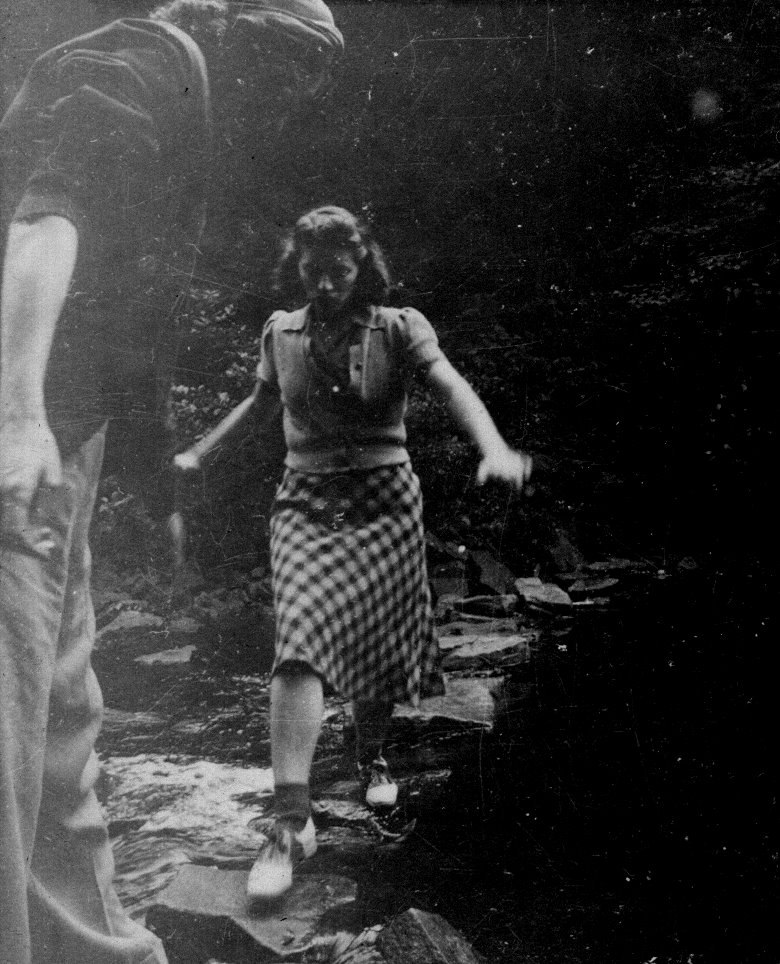
Allen and Catherine dating, before the war — she crosses a woodland stream on stepping stones.Catherine leans on a footbridge railing — Allen and Catherine dating, before the war.
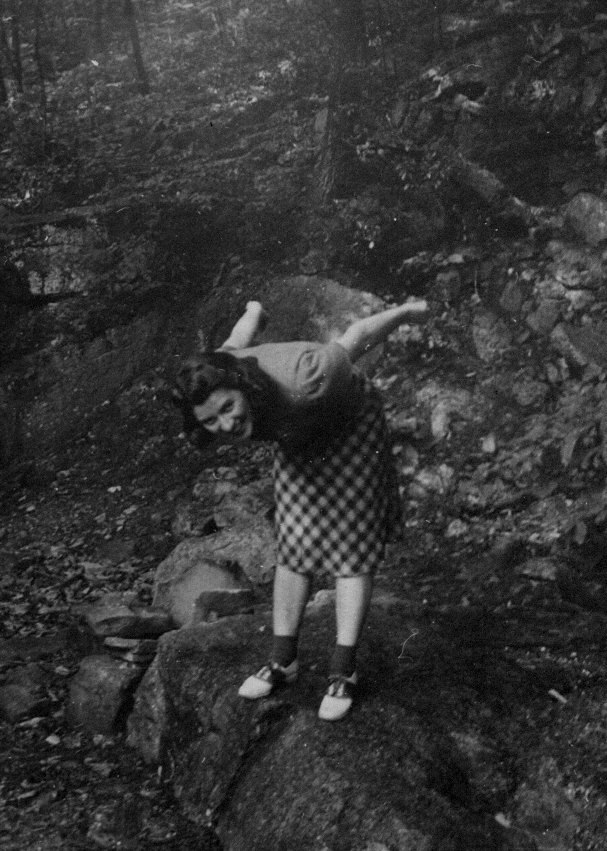
Catherine poses playfully on a boulder in the woods, the same outing.Allen and Catherine, arm in arm, both smiling broadly.Allen leans on a wooden bridge railing, smoking a pipe — the same courtship-era outing.
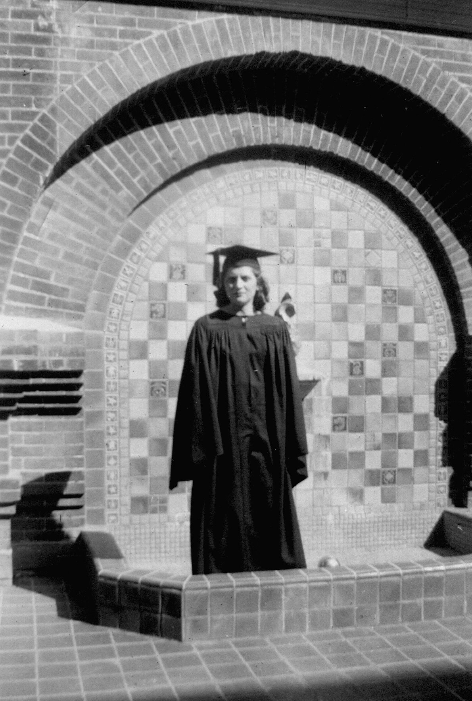
Catherine in cap and gown at her Kutztown State Teachers College graduation, while Allen was overseas.Catherine and friends beside a sign: “Kutztown State Teachers College, Class of 1938.”Catherine and college friends pose around a lion's-head fountain on campus.
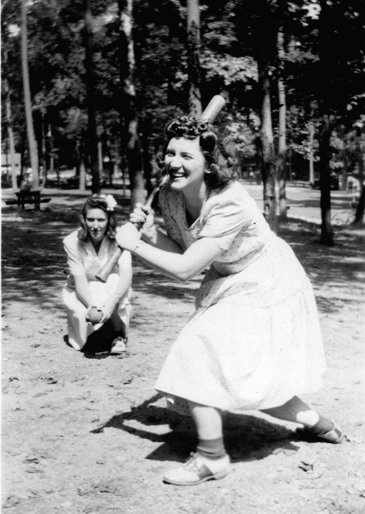
Catherine swings a bat playing ball with friends in a wooded park.A 1930s sedan parked on a street of Victorian rowhouses.The family dog barks from atop a brick porch pier.
Catherine
Catherine recorded her own interview in 2013, the same format as Allen's: a family member asking questions, she answering in her own words. The excerpts below are two passages the family chose from that recording.
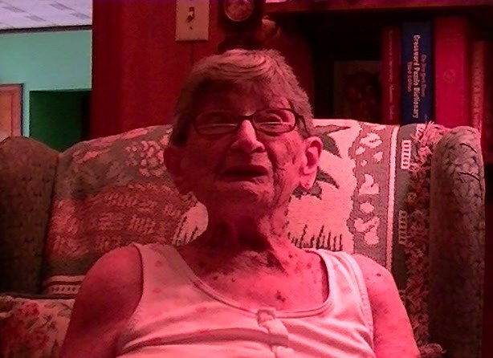
Catherine, mid-story, 2013 interview.
Kutztown State Teachers College
C
Catherine00:03
Yep. Hello, my name is Catherine Sarah Sweigert. My father's name was Earl Ambrose Kline, and my mother's name was Sarah Marion Reiger, and I was born on December the 21st, 1919, on Grove Street in Cressona, Pennsylvania. I have one, I had one sister, who was Betty Ann, and she married Harold Straub. I married Allen Sweigert on October the 14th, 1944.We had two boys, Allen Jr. and John.Allen was the son of Earl Joshua Sweigert and Helen Fessler.
J
Jeremy01:01
A little bit about your schooling, and then your full-time job.
C
Catherine01:10
I went to, uh, Cressona schools, uh, graduated from Cressona High School in 1937.And that fall, I went to Kutztown State College, and I was there for four years and received my Bachelor of Science degree with... with, uh, a major in Library Science and in Social Studies and a minor in English. I, uh, taught at Port Carbon High School for one year after I graduated. Then I came to Cressona for three years, and then I got married, and I had children, two boys, uh, and I didn't go back to school to teach again. Uh, and I didn't go back to school to teach again. Gee, I don't remember what year it was, but I was at Schuylkill Haven for thirteen years. Schuylkill Haven High School, where I was a high school librarian. Ah, that's about all I can tell ya.
J
Jeremy02:25
All right. Um, what year did you graduate Kutztown?
C
Catherine02:30
1941.
J
Jeremy02:33
Now, correct me if I'm wrong, but wasn't that pretty extraordinary at the time? What?
C
Catherine03:05
Well, I was pretty fortunate in being able to go. I made a lot of great friends there.
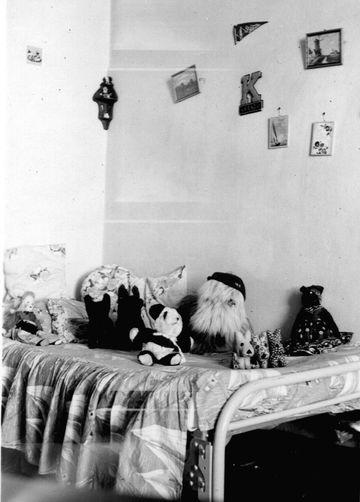
Catherine's dorm room at Kutztown.Catherine, a formal portrait from her Kutztown years.
“I think the reason I lived this long was I was well taken care of, because I had a husband that was one of the best in the world. And he lived a long life, too, so I guess we got along well.”
Catherine S. Sweigert
A Husband, A House, A Tree House
J
Jeremy00:00
Okay, there's another question. This one might be mind-boggling, but what do you believe is the secret to your longevity?
C
Catherine00:11
Well, I really don't know, because at one time I smoked, and I'd take a drink once in a while, not often. You like your Yuengling Lager, I believe.
J
Jeremy00:20
Huh?
C
Catherine00:21
I think you like your Yuengling Lager. Yeah, I like that, a little bit. Not a lot. I'm not much of a beer drinker. I like scotch and soda better. Whew! That's heavy stuff. But, I tell you what, I think the reason I lived this long was I was well taken care of because I had a husband that was one of the best in the world. And he lived a long life, too, so I guess we got along well. Yes, we did. He built the house we're in right now. Yes, he built it. He sure did. One Thanksgiving, he was up putting the roof on this house. He and George Strach and Johnny Green.
C
Catherine01:17
And it was a Thanksgiving day, I remember.
J
Jeremy01:20
Let's not forget the second house he built. What was that? Oh, you don't remember?
C
Catherine01:26
He built a three-story house for his grandson. Oh, yes, he did. He built a tree house out back. Oh, that was a while. That was a wild time. That was a wild time.
J
Jeremy01:38
Let's see how many floors we can put on this baby.
C
Catherine01:41
It got pretty high. That was all right. No girls allowed. The word is a lud. Ay, ay, ay. Some of the best times we all had was when we went to the shore. Oh, yeah. We all liked the shore. Going to Wildwood.
Allen and Catherine with their grandchildren, 1986.